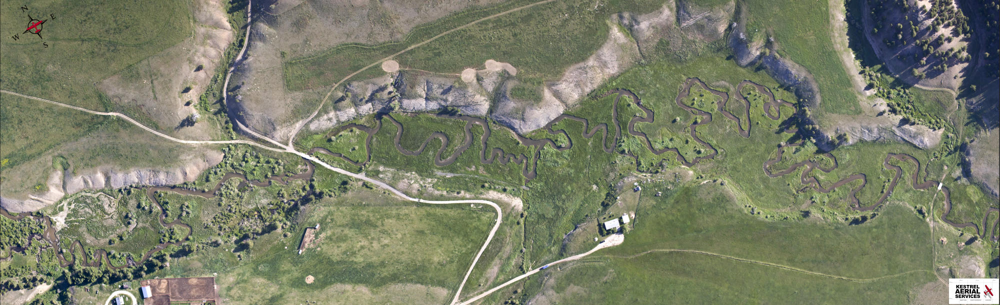

According to the U.S. EPA over 55% of U.S. waterways are in poor health. They provide little habitat for wildlife, do not cleanse water and due to their human alteration, act as channels that magnify the impact of floods. We restore rivers to provide greater habitat for fish and all forms of wildlife. Additionally, the river restoration results in lower water temperatures, cleaner water, a recharging of the aquifer and slower moving water (resulting in less impactful floods). We have restored roughly 50 miles of creeks and rivers to date.
River Restoration

